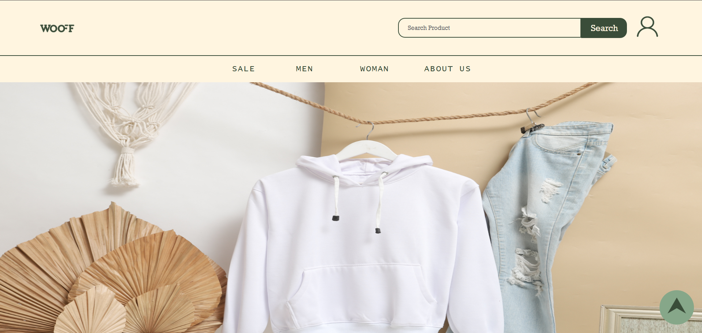
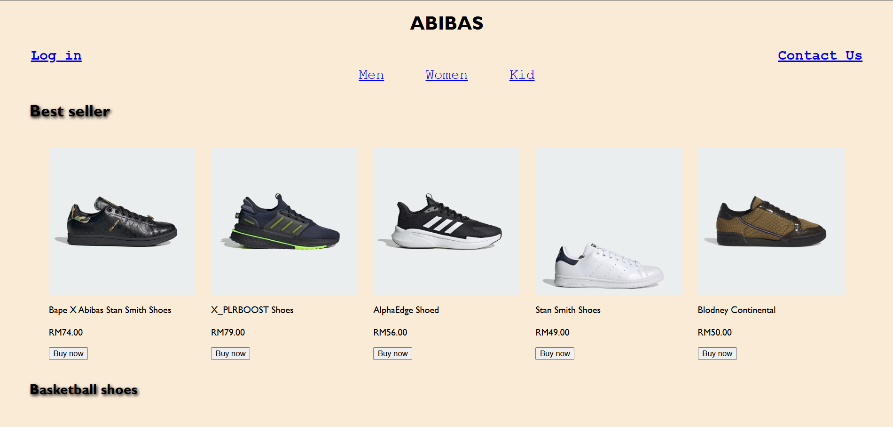
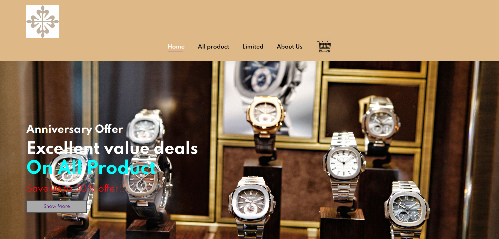
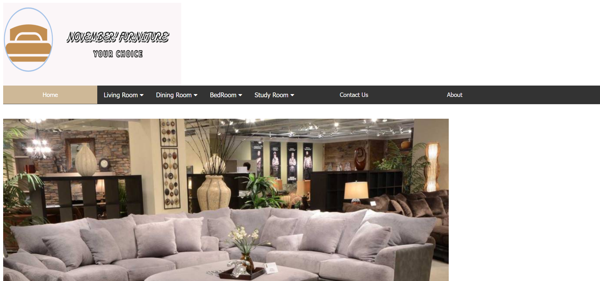
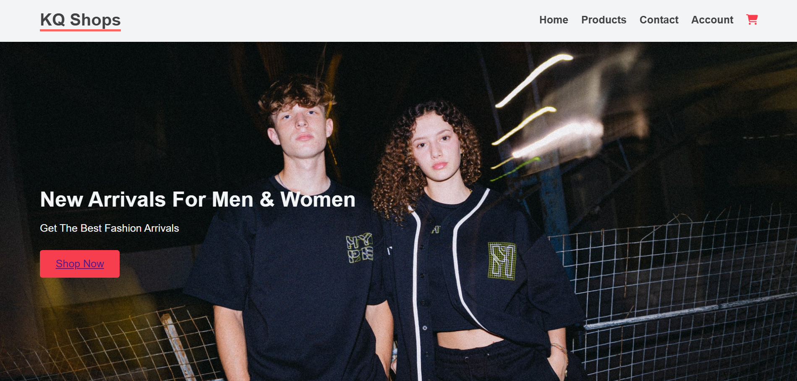
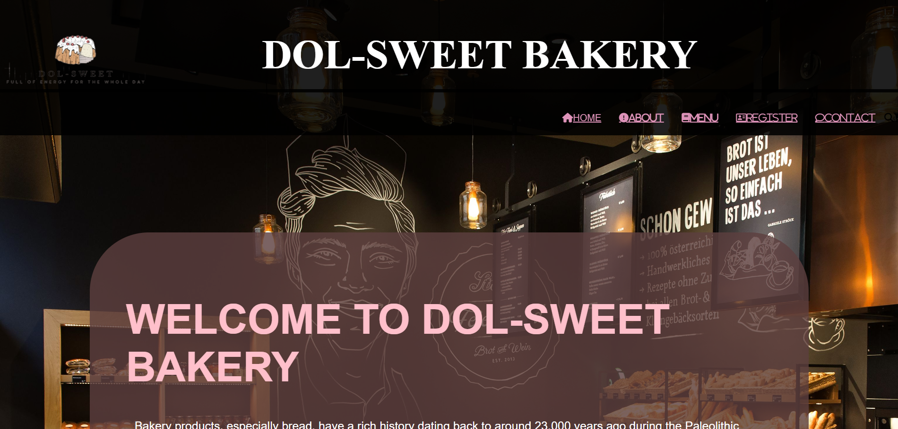

|

View Project |

View Project |

View Project |
|

View Project |

View Project |

View Project |
AI-Powered Traffic Prediction System
A group of diploma students developed an AI model that predicts city traffic flow using machine-learning algorithms and real-time data. The system achieved 89% accuracy and demonstrated how computing can improve smart city planning. The project was supervised by the School of Computing’s research team.
Smart Attendance App Using QR & Facial Recognition
Degree students created an innovative attendance-tracking mobile app that integrates QR scanning with optional facial-recognition verification. The system minimizes proxy attendance and improves reliability for lecturers. It was later adopted for internal use during workshops and events.
"The programme gave me strong fundamentals in coding and software design. I appreciated how the lecturers encouraged creativity in every assignment. My final-year project turned into an internship opportunity, which helped launch my career."
"I enjoyed the hands-on learning approach. We spent a lot of time in the lab building real applications instead of just learning theory. The supportive environment helped me unlock my interest in cybersecurity."
"Data science felt intimidating at first, but the lecturers explained difficult concepts in simple ways. The projects involving real datasets were the most exciting part. I now feel ready to pursue a data analyst role."
"The short course was fast-paced but extremely practical. Within a few weeks, I learned how to build a complete website. The instructors were friendly, and the exercises helped me understand how websites work."